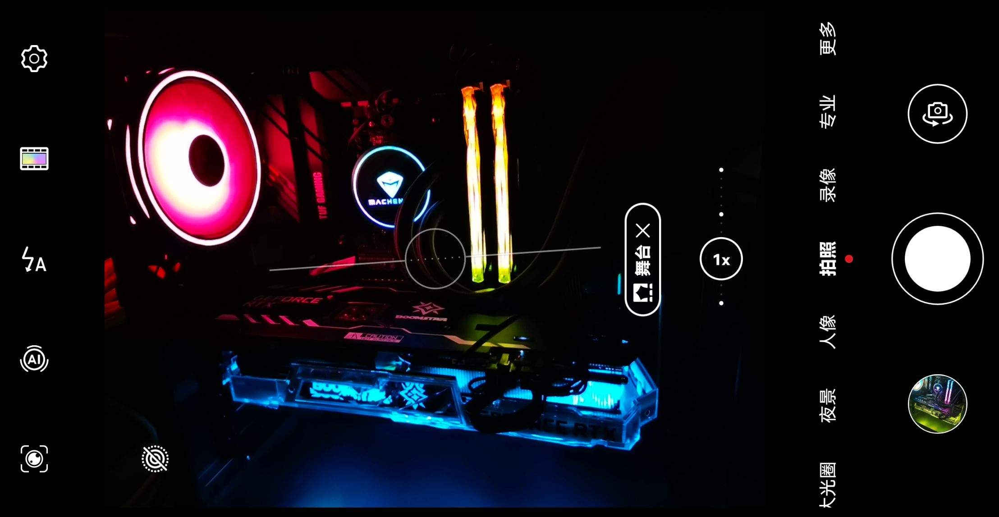

学习了一下选购台式机配件以及台式机组装时需要注意的一些参数和细节。
一些选购前必须知道的基本概念：
CPU与GPU：组台式最贵的两个配件（主要还是显卡贵，其实CPU还好）
- CPU参数：购买CPU最省心的方法就是去搜CPU天梯图。基本只要看架构、主频、核心线程数就行了。架构决定了一条指令能干多少活，主频决定了执行指令的速度，核心线程数决定了多少人在执行指令。近期Intel终于结束了14nm++++时代，被AMD倒逼的挤了一大罐牙膏。CPU超频只要在bios里打开全核超频就行了（不是auto而是enabled）。深度定制不是很懂，也没必要为额外2%的性能去捣鼓半天，还牺牲了稳定性和20%以上的能耗。
- GPU参数：购买GPU最省心的方法就是去搜GPU天梯图。注意用了独显后，HDMI、DP等显示器线必须插独显上。冷知识：显卡的PCB板才是本地，剩下的都是散热。不同厂家的卡会在散热的堆料和工艺上有区别，显存和核心温度会影响显卡性能。
- 散热：实验表明，一般情况下机箱散热采取前进后出，下进上出是最好的。风扇安装时，优先级一般从高到低安排后出、上后出、前进风。后出风风扇是非常重要的，尽可能装上。如果CPU走水冷，尽可能装上出风，有利于散热也有利于水冷头排除空气减少噪音；如果CPU走风冷，务必跟随前进后出，不要和其他风扇打架。GPU一般自带散热，公版采用涡轮式散热，显卡堆叠时散热效果好，但是一般由于涡轮扇转速大，噪音会更大。CPU塔式散热主要需要关注铜管数、铜管是否镀镍、铜管与CPU接合、与散热鳍片接合的工艺。CPU水冷240和360性能差不多。一般水冷散热效果优于风冷，尤其是GPU上水冷效果提升更显著。无论是CPU还是GPU，风冷散热都是通过铜管内部液体蒸发冷凝将温度带给末端被动散热的鳍片进行散热的，严格来说散热不包含风扇。
- 风扇：不同于电风扇，目前市面上大多数风扇的正面都是进风的，安装时不确认可以通电后拿餐巾纸确认一下。风扇的参数包括气压和风量等，实验表明风量气压对实际散热影响不大（猫头鹰除外）。在轴承上滚珠轴承最吵但寿命最长，其他基本都是含油轴承及其改进（猫头鹰除外）。支持pwd的风扇可以根据实际温度无极调控转速，支持aRGB风扇光污染更好看。
内存与硬盘：后期增强台式性能的两大黑洞
- 内存插法：首先要知道一个结论：8+8>8+16>>16。两条在双通道上的8G内存，会比一根同参数的16G内存在性能上强很多。在内存需求低于16GB的情况下，8+8会比8+16性能更好，因为8+16的16只有一半走双通道，而剩下的8是单通道。购买内存时应当尽可能需要买体质相近的内存。应当避免插3根内存（1、2、4根皆可）。主板主流的内存布线有两种，电气特性会有一些区别。如果不深究的话，在4根槽的主流主板上插1根内存时应当插2，插2根应当插2、4（靠近CPU的为1）。部分主板会在主板上或说明书上写明插内存的顺序，可以关注一下。
- 内存参数：内存并不是主频越高越好，主频/时序才和线性相关。另外，超高频内存有可能会和CPU或主板产生兼容性问题（特别是4000MHz以上时，CPU带宽不兼容可能导致分频，依具体CPU而定，此时性能会有一个小断崖），选购时需要注意。内存超频记得在主板打开XMP（华硕主板叫DCOP），不然大概率运行在2133MHz或2666MHz。如果买的是套条，体质一般更为相近，可以试试自己去调更好的频率和时序。
- 硬盘参数：硬盘从速度由高到低一般分M.2固态、SATA固态和SATA机械。即使是SATA固态也会比传统的机械硬盘在读写性能上有较大提升，而近年基于NVME协议的固态更是提升了一个量级，甚至有四块三星980pro组raid0的顺序读写速度超过内存的情况（当然随机读写肯定拉胯）。对于固态，最影响日常使用的性能参数为硬盘占用50%以上后小文件低队列深度读写速度，顺序读写只在超大文件写入时才能体现。对于固态，需要注意如果是PCIE4.0x4的M.2固态，插在只支持PCIE3.0x4的接口上会影响速度上限（PCIE速度计算：3.0x1是1GBps，通道数对应乘上去就行，4.0额外翻倍）。固态的颗粒分为SLC、MLC、TLC、QLC（single、multi、triple、quad），SLC是寿命最高性能最好的。另外由于写放大机制等，缓存越大一般寿命越低，缓存小而缓外速率高的硬盘才是真正的好盘。不过总的来说，固态到底什么速度不很重要，上没上固态才很重要。
主板与机箱：虽然主板和机箱并不是配台式最先应当考虑的配件，但却是日后提升电脑性能的重要平台
- 主板大小：主板的物理大小决定了它适合何种机箱。目前常见的主板大小有ITX、M-ATX、ATX等。一般情况下越大的主板可扩展性会越好，支持高扩展的小主板一般会非常贵。
- 主板兼容性：需要关注主板所能搭载的CPU平台，以及是否支持诸如DDR5插槽、是否支持内存双通道、PCIE4.0协议的M2插槽、PCIE插槽实际的通道数等等。光污染玩家需要关注主板是否有5v3针的aRGB接口。需要关注南桥的通道瓶颈是否会影响未来硬盘和外设的带宽。大牌的主板配套bios肯定会更好，未来很多硬件调教都要依赖bios，因此尽可能选大牌。
- 主板可扩展性：检查主板提供的内存条数（ITX一般只有两条，关注是否支持双通道）、PCIE代数通道数与条数（主要用于显卡，也可以插固态、声卡、网卡等，需要特别关注是否会出现PCIE与PCIE、M2共用总线的情况）、M2接口数（用于插固态，检查是否CPU直连、是否是PCIE4.0的M2）、SATA版本与接口数（用于SATA固态或机械硬盘，组nas必备）、是否支持WIFI（以及是否送WIFI信号放大器，这是必备的）、主板背部USB、typeC等接口。需要关注主板堆料的豪华性，比如供电的电容数量（重要）和散热装甲。也可以关注CMOS指示灯、主板RGB等细节。
- 机箱可扩展性：机箱外观上一般是侧透机箱比较好看（适合光污染）。主要需要关注点有：机箱尺寸、机箱前部的额外USB插槽、电源仓、背线设计、进风道设计（部分机箱前进风是闷罐形的，也有开放式的）、硬盘槽数量（组nas必备）。部分机箱对显卡竖装或者侧进风有很好的支持。用料扎实的机箱会更耐摔。
另附本人配的垃圾电脑（家境贫寒青春版）：

1 | 主板：华硕B550M Plus WIFI |
2 | CPU：AMD Ryzon 5 5600X |
3 | GPU：影驰星耀 3070ti 8GB OC |
4 | 内存：影驰星耀 16GB*2 3600 CL18 |
5 | M.2_1：西部数据SN850 500GB PCIE4.0 |
6 | M.2_2：三星970EVO Plus 1TB PCIE3.0 |
7 | 机械：希捷ST8000 8TB 7200转 |
8 | CPU散热：酷冷至尊冰神360 一体式水冷 |
9 | 机箱散热：酷冷至尊MF120 |
10 | 电源：九州风神DQ750ST 750W金牌全模组 |
11 | 机箱：九州风神魔方P310 灰色 |